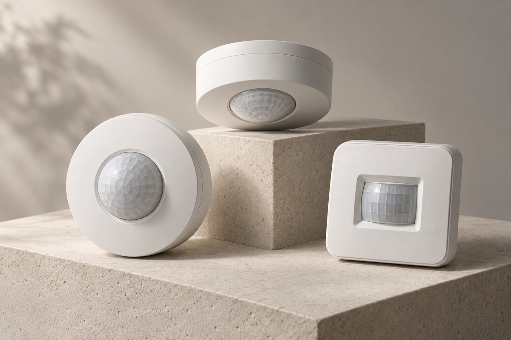
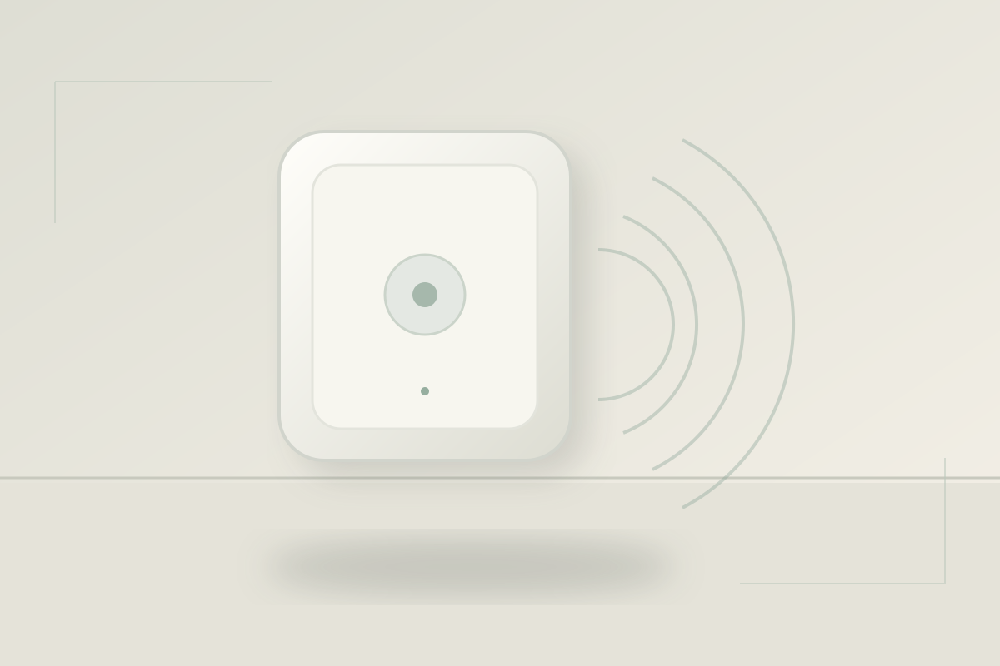
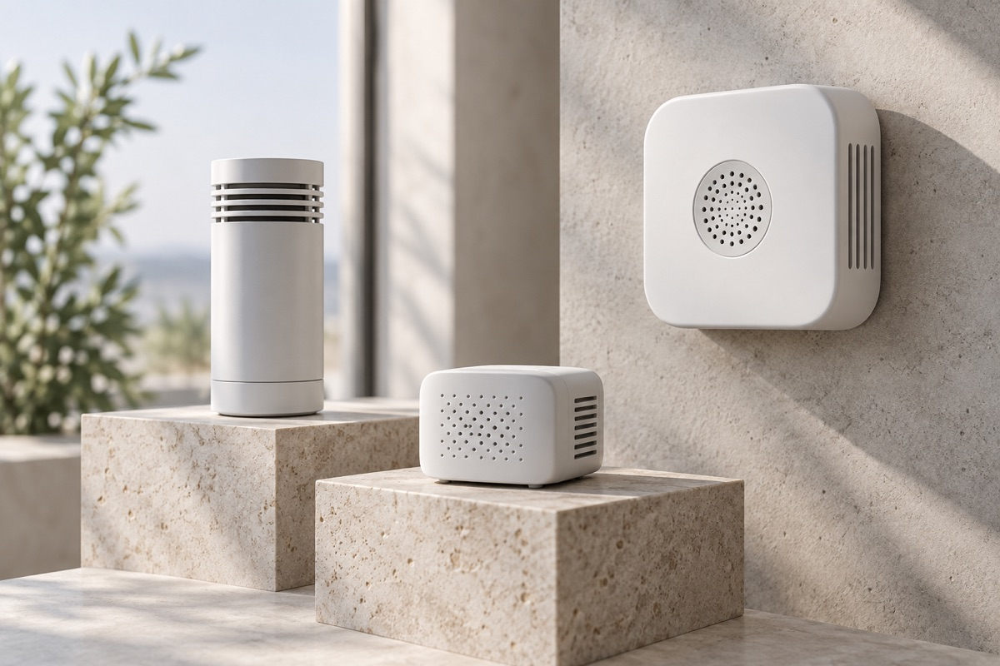
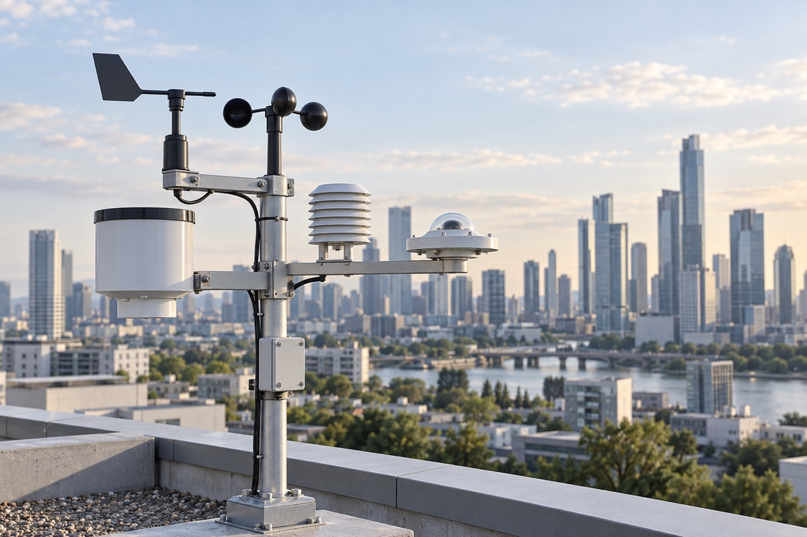
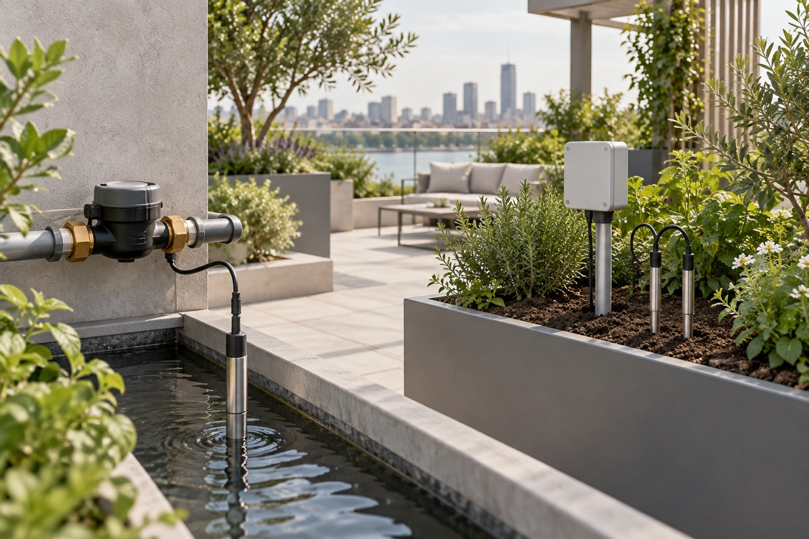
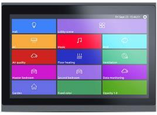
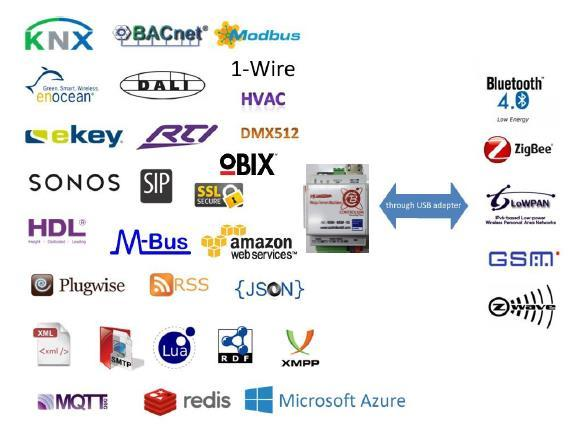

Motion & presence
PIR motion detectors
A range of PIR options for occupancy-led lighting and building control.
Explore PIR motion detection first, then air, gas, weather, water, soil and vision sensing—alongside lighting and BMS control.
PIR sensors detect changes in infrared energy associated with movement. They can support occupancy-led lighting and building-control strategies, with the right model chosen for each space.
Ask about PIR models
Tell us your application and we’ll help identify a suitable product option and confirm model specifications.
A range of PIR options for occupancy-led lighting and building control.

Radar-based presence and motion sensing; ask about model-specific sleep, breathing and pulse/heart-rate features.

Monitor sound levels for building and environmental applications.
Carbon dioxide monitoring for indoor-air and ventilation strategies.
Carbon monoxide detection options for relevant spaces and systems.
Explore PM1, PM2.5, PM4, PM10, TVOC, temperature and humidity sensing.
O₂ sensing for applications requiring oxygen-level monitoring.
LPG, butane and hydrocarbon detection options.
Dust and smoke detection options for suitable applications.
O₃ monitoring options for air and process applications.
SO₂ detection for environmental and industrial applications.
NO₂ detection for environmental and industrial applications.
HCHO monitoring options for indoor-air applications.
NH₃ detection options for relevant facilities.
H₂S detection options for relevant facilities.
PH₃ detection options for relevant facilities.
Sulfur hexafluoride sensing options for specialist applications.

Ambient light measurement for lighting and daylight-responsive control.
Wind speed, wind direction and rainfall monitoring.
Solar irradiance monitoring for outdoor and building applications.
Ultraviolet radiation measurement for outdoor monitoring.
Atmospheric visibility monitoring for specialist sites.

Level monitoring for tanks, water systems and site applications.
Flow measurement options for water systems.
Pressure monitoring for building and process applications.
Explore NPK, pH, temperature, humidity and electrical conductivity sensing.
Vision-based identity options for controlled access projects.
Computer-vision sensing for gesture and pose-driven interaction.
Automatic door access using suitable biometric or facial-recognition systems.
Facial-recognition concepts for attendance, room and breakfast access, subject to project requirements.

KNX and DALI lighting control, scenes and occupancy-led automation.

Discuss BMS connection, automation servers and integration interfaces.
Showing all 32 product areas.
Images are illustrative and do not identify a specific available model. Features, interfaces, certification and availability must be confirmed for the selected product. mmWave vital-sign features are model dependent and are not presented as medical devices.